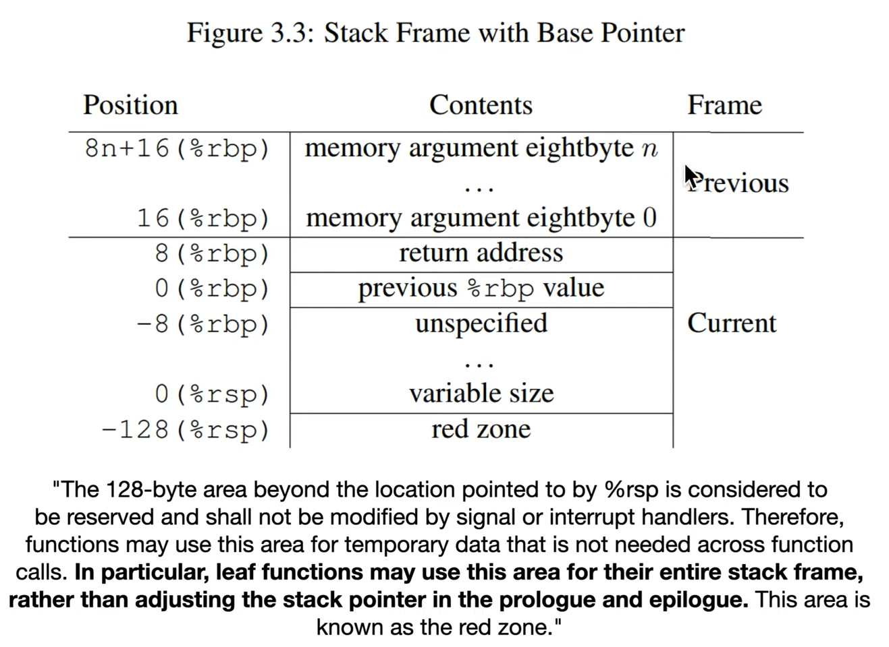

red zone - 128-byte of dedicated zone that leaf (and others?)functions may use to store their data.
System V x86-64 ABI gives us about a fixed-size area (128 bytes) in the stack frame, called red zone.
As a result there's no need for
sub rsp, 12. Just
mov [rbp-12], X
SingleLocalVariable.c

There is no sub rsp and add rsp.
This area according to sysV is called the red zone.
red zone - 128-byte of dedicated zone that leaf functions may use to store their data.
